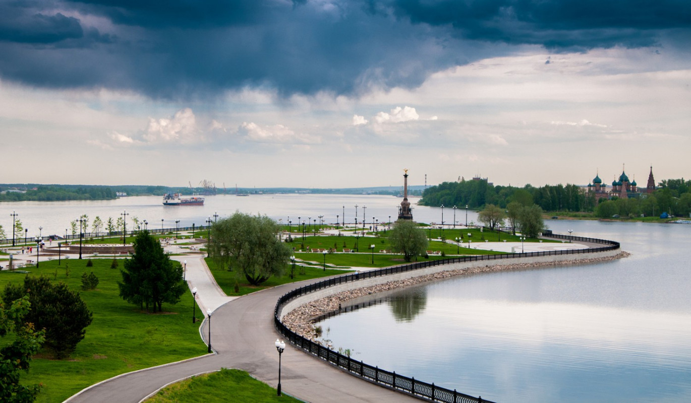

История основания
Город Ярославль — старинный волжский город, широко известный своими замечательными памятниками зодчества, сокровищница древнерусского искусства. Многовековая история г. Ярославля начинается с основания в 1010 году ростовским князем Ярославом Мудрым города-крепости на Стрелке — месте слияния рек Волги и Которосли.
>
Достопримечательности
церковь Ильи Пророка
Особенно хороша и нарядна церковь Ильи Пророка, расположенная в центре города на Ильинской площади. Внутри храм поражает многоцветностью и пышностью убранства. Стенописи церкви выполнены в 1680-1681 годах костромскими и ярославскими мастерами во главе с Гурием Никитиным и Силой Савиным. Золоченый резной иконостас выполнен в стиле барокко и является замечательным произведением декоративного искусства. В убранстве церкви Ильи Пророка есть и многоцветные изразцы. Это далеко не полное описание произведений живописи и декоративно-прикладного искусства церкви Ильи Пророка, являющегося одним из филиалов историко-архитектурного музея-заповедника Ярославля. Ярославский музей-заповедник находится на территории Спасо-Преображенского монастыря.

Волжская набережная
Городская набережная была обустроена в начале XIX века после визита Александра I в Ярославль. Императору не понравился неухоженный вид берегов Волги, и он распорядился о выделении средств на благоустройство. С тех пор Волжская набережная стала настоящим украшением и главным променадом города, поддерживающимся в порядке и чистоте в любое время. Она тянется вдоль высоких берегов реки, откуда открывается живописный вид.
Парк на Стрелке
Городской парк, расположенный в месте слияния Волги и Которосли на песчаной косе. Он представляет собой зеленую территорию с широкими прогулочными аллеями и зонами отдыха. Парк был облагорожен в 2010 году к празднованию векового юбилея основания города. Его украшает памятник 1000-летию Ярославля в виде стелы, увенчанной двуглавым орлом. У основания обелиска находится фигура Ярослава Мудрого и еще четырех персонажей, олицетворяющих образы горожан.

Ярославский музей-заповедник
Музейный комплекс, включающий несколько церквей, тематических музеев, научную библиотеку, а также Спасский монастырь. Объединенный фонд музейного собрания содержит более 350 тысяч экспонатов, среди которых – ценные иконы и рукописи, предметы быта, церковная утварь. Отдельная экспозиция посвящена летописи «Слово о полку Игореве». Комплекс был образован в 1924 году после объединения нескольких городских музеев в единую систему.